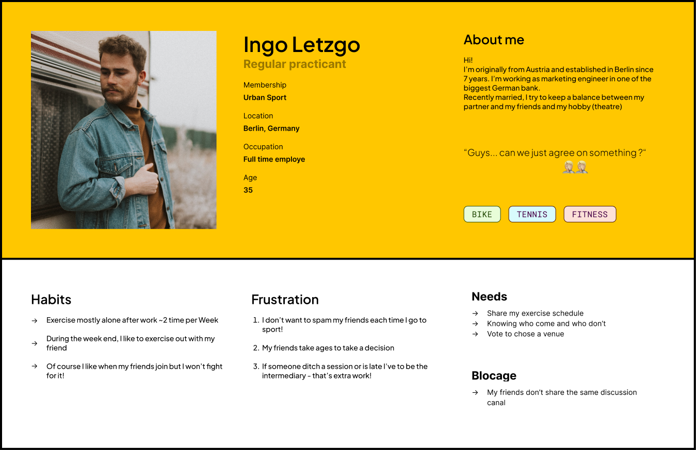
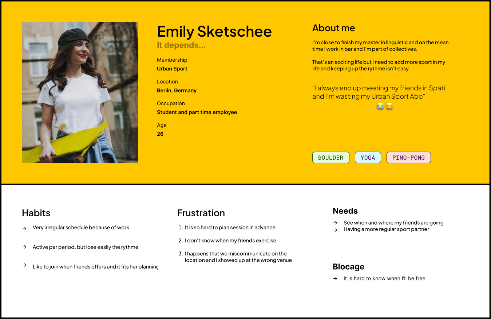
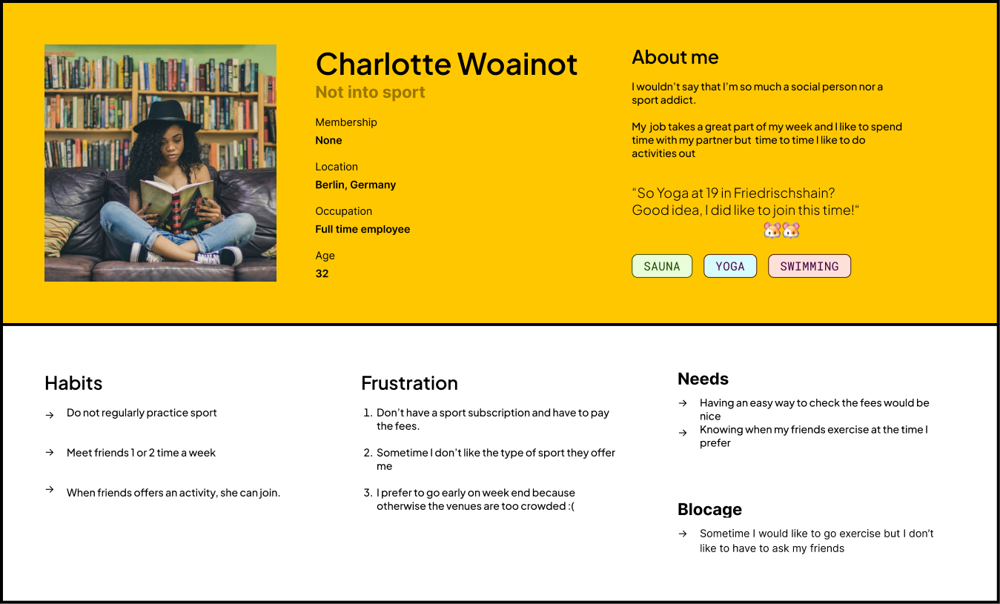
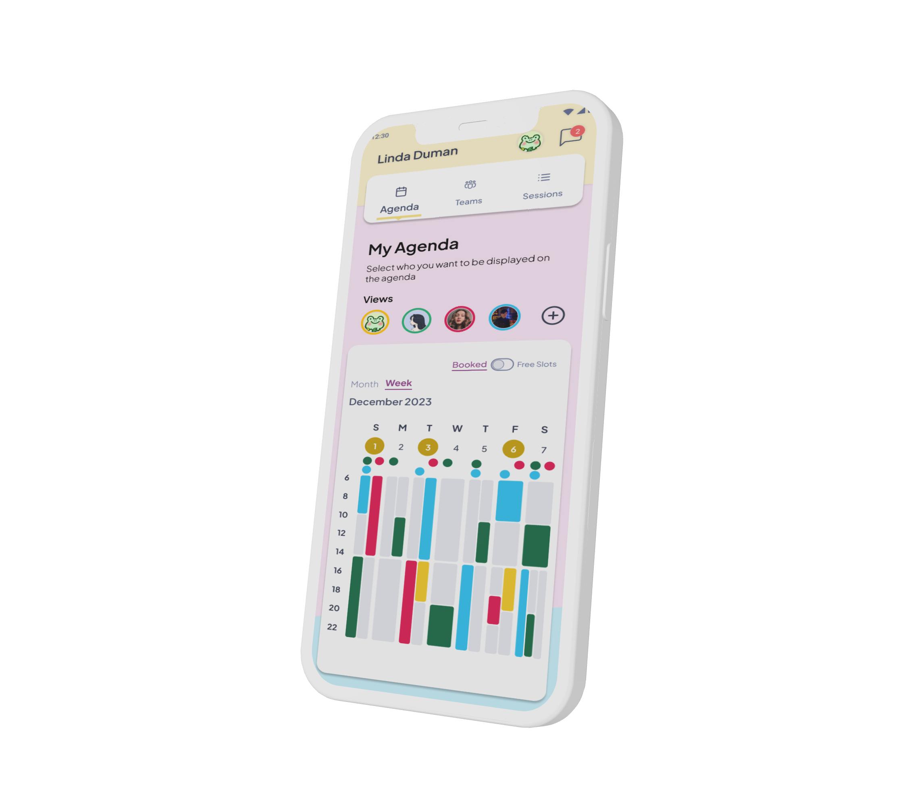
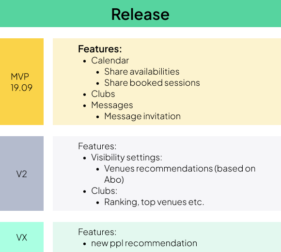

Context
In the first place, the project Swt·Co is the extension of a previous project based around a Sport and tracking app.
Without entering the details, the research launched for this project made a few exciting flaws with the experience users encounter with sports… and App.
The main concern for individuals who start engaging in a sports practice, especially when this one requires subscription fees, is regularity.
Users are willing to pay. But they may quickly regret their choice as they struggle to maintain a regular training schedule. This demand has been a long time by the main actors of the sector, and many of them try to solve it through a set of mechanics:
- · Rewarding and gamification system
- · Offering flexible training
- · Limitation of the material needed for the sports practice
- · Tracking and reporting of the user progress
- · Social valorization through the publication of performance records
As good or successful as these apps are, the problem hasn’t been solved, and most of us can probably relate to this point: It is hard to stay motivated for regular sports practice!
Research
As the main issues concerned motivation and regularity, the research for the Swt·Co project has been oriented in different axes:
1. Secondary Research
a. Market Analysis
- I observed that many apps were focused on promising a nice-looking body. These Apps are highly numerous, rely on gendered imagery, and are not well known for their name. They are successful but generic.
- · Nike Coach is the flagship of an app model based on offering flexible training, generally qualitative.
- · Sweat-Coin is a newcomer pushing the concept of gamification to a new extent.
- · Strava or Runnstatic are primarily used for bike and running practice and comport a higher use of social features.
b. Theory of the motivation
From my background in psychology, I know that the role of peers is extremely determinant in motivation, and I sweep through a few theories:
- · The Social Learning Theory from Albert Bandura
- · The Social Identity theory from John C.Turner
These two authors, among others, stress the role of peers as an essential behavioural trigger in others
2. Primary Research
This phase is conducted through interviews oriented to 4 broader areas:
a. Sport Habits and Subscription Model
- · "How often do you engage in physical activities or sports?"
- · "Have you ever subscribed to or used a sports membership, such as Urban Sport or gym club membership?"
- · "What do you like or dislike about the sport membership? (ClassPass, Urban Sports Club, Gymlib, or any other sports membership)"
b. Social Aspect of the Sports Practice
- · "How do you determine a suitable time for everyone to participate in a sports activity?"
- · "How do you typically go about organizing sports sessions with friends?"
c. Eventual pain point in the experience
- · "If you have a magic spell, what would you wish to happen for a service that connects your friends and sports?"
- · "Which factor is the most important when organizing a sports session with friends?"
d. Interest in meeting new people around sport
- · "Would you be open to meeting new people through an app to engage in sports together?"
Main Insights:
- · People do like the multi-room subscription model (Urban Sport)
- · Even if the individual subscription model is dominant, the social aspect is still positively associated with the practice of a sport
- · Users don't have a clear routine/flow nor a dedicated app to organize collective training
- · In consequence, they often struggle to organize themselves with their friends
Concept
To manage sports sessions with friends, the most critical points are:
- 1. Finding a sport that everyone is into
- 2. The timing: which fits as many people as possible
- 3. The location where the session takes place
The most requested features would be, respectively:
- 1. Ability to propose and vote on activity times
- 2. Venue suggestions based on user preferences
- 3. In-app messaging for coordination
- 4. Integration with existing fitness apps
Conversely, meeting new people through an app in a sports context is not a need most respondents expressed.
Personas
Based on the research, I builded 3 users personas.
The App aims to answer the need of these 2 first Personas and to take into consideration the third one which is considered as a side-persona.
1. Ingo Letzgo:
Regular practioner, Ingo would like to be joined by his friend but wants to reduce the mental charge of organizing sessions

2. Emily Sketschee
Her practice is more spontaneous. The main point would be to know in advance where and when her friends would be available to practice with her without having to ask

3. Charlotte Woainot
Mostly Spectator: this side persona isn’t practising sport regularly but may like to join his friends occasionally.
Per analogy with group chat or social network, Charlotte reads but doesn't publish much.

Conception
Swt·Co (initialy called Sweat Club) will be an app combining three main features:
1. A Shared calendar feature
- People should be able to share their training time
- To see friends’ training time
- To know who’s taking part in a training
- To share their availabilities to practice sport (Even without a formal booking)
2. In-app messaging system
- Possibility to create a group message
- Opportunity to organize simple sport-based communities
3. Suggestions and help to decision to find a common place for sport
- Take into consideration the type of membership subscription users have
- Take into consideration the distance
- Offers in-app tools like a poll feature to let users vote and decide where and when to go
As we know better our users qnd their needs, we can consider that the project now has a "Why" and a "How".
With these fundamental ingredients and some graphical work we can now produce a solution.
It is time to Cook! 🧑🍳🍲
Final Delivery
You can access the prototype link by clicking on the image below.

Next to Come
A few features could have been displayed in the prototype.
The next evolution has been prioritized in a provisional roadmap.

Pssst! 🙃
Swt·Co is an ongoing project. For any suggestions or if you wish to contribute, feel free to reach out and help to sports make sports session planning a little bit cooler 🏄♂️